Proyecto Final#
Tendencias Salariales en Empleos de Ciencia de Datos, AI y ML (2025)#
Autor:
Fecha: Julio 2025
Objetivo#
Analizar las tendencias salariales en empleos relacionados con Ciencia de Datos, Inteligencia Artificial (IA) y Aprendizaje Automático (ML), identificando los factores que podrían influir en la remuneración. Se busca desarrollar un modelo predictivo mediante aprendizaje automático para estimar rangos salariales basados en características laborales y profesionales, complementado con un análisis exploratorio de datos que permita detectar patrones, desigualdades y relaciones clave en el sector tecnológico
Estructura del Notebook#
Introducción
Carga y revisión de los datos
Limpieza y transformación de variables
Análisis exploratorio de datos (EDA)
Visualización de variables numéricas y categóricas
Codificación y preparación para modelado
Modelado predictivo con algoritmos de Machine Learning
Evaluación y comparación de modelos
Conclusiones y recomendaciones
Anexos y referencias
Introducción#
El presente estudio se centra en el análisis de las tendencias salariales en empleos relacionados con Ciencia de Datos, Inteligencia Artificial (IA) y Aprendizaje Automático (ML) durante el año 2025. Estas áreas tecnológicas emergentes han experimentado un crecimiento significativo en la demanda de profesionales altamente especializados, lo que ha generado variaciones importantes en los niveles salariales ofrecidos por diferentes empresas y modalidades de trabajo.
El objetivo principal de este análisis es identificar patrones, desigualdades y factores determinantes del salario, utilizando un enfoque de análisis exploratorio de datos (EDA) complementado con técnicas de aprendizaje automático para la predicción de rangos salariales. La información obtenida permitirá comprender mejor la estructura del mercado laboral en estas disciplinas y proporcionar recomendaciones fundamentadas para empleadores y profesionales del sector.
La investigación se enmarca dentro de un contexto de creciente interés por la equidad salarial, la optimización de recursos humanos y la planificación estratégica en empresas tecnológicas. Asimismo, busca contribuir a la literatura existente sobre remuneración en profesiones de alta demanda tecnológica, ofreciendo evidencia empírica basada en datos recientes y relevantes.
import pandas as pd
import numpy as np
import matplotlib.pyplot as plt
import seaborn as sns
sns.set(style='whitegrid', palette='Set2')
plt.rcParams['figure.figsize'] = (10, 6)
Archivo CSV#
# Cargar archivo CSV
df = pd.read_csv("salaries.csv")
# Visualizar las primeras filas
df.head()
---------------------------------------------------------------------------
FileNotFoundError Traceback (most recent call last)
Cell In[2], line 2
1 # Cargar archivo CSV
----> 2 df = pd.read_csv("salaries.csv")
4 # Visualizar las primeras filas
5 df.head()
File ~\miniconda3\envs\ml_venv\lib\site-packages\pandas\io\parsers\readers.py:1026, in read_csv(filepath_or_buffer, sep, delimiter, header, names, index_col, usecols, dtype, engine, converters, true_values, false_values, skipinitialspace, skiprows, skipfooter, nrows, na_values, keep_default_na, na_filter, verbose, skip_blank_lines, parse_dates, infer_datetime_format, keep_date_col, date_parser, date_format, dayfirst, cache_dates, iterator, chunksize, compression, thousands, decimal, lineterminator, quotechar, quoting, doublequote, escapechar, comment, encoding, encoding_errors, dialect, on_bad_lines, delim_whitespace, low_memory, memory_map, float_precision, storage_options, dtype_backend)
1013 kwds_defaults = _refine_defaults_read(
1014 dialect,
1015 delimiter,
(...)
1022 dtype_backend=dtype_backend,
1023 )
1024 kwds.update(kwds_defaults)
-> 1026 return _read(filepath_or_buffer, kwds)
File ~\miniconda3\envs\ml_venv\lib\site-packages\pandas\io\parsers\readers.py:620, in _read(filepath_or_buffer, kwds)
617 _validate_names(kwds.get("names", None))
619 # Create the parser.
--> 620 parser = TextFileReader(filepath_or_buffer, **kwds)
622 if chunksize or iterator:
623 return parser
File ~\miniconda3\envs\ml_venv\lib\site-packages\pandas\io\parsers\readers.py:1620, in TextFileReader.__init__(self, f, engine, **kwds)
1617 self.options["has_index_names"] = kwds["has_index_names"]
1619 self.handles: IOHandles | None = None
-> 1620 self._engine = self._make_engine(f, self.engine)
File ~\miniconda3\envs\ml_venv\lib\site-packages\pandas\io\parsers\readers.py:1880, in TextFileReader._make_engine(self, f, engine)
1878 if "b" not in mode:
1879 mode += "b"
-> 1880 self.handles = get_handle(
1881 f,
1882 mode,
1883 encoding=self.options.get("encoding", None),
1884 compression=self.options.get("compression", None),
1885 memory_map=self.options.get("memory_map", False),
1886 is_text=is_text,
1887 errors=self.options.get("encoding_errors", "strict"),
1888 storage_options=self.options.get("storage_options", None),
1889 )
1890 assert self.handles is not None
1891 f = self.handles.handle
File ~\miniconda3\envs\ml_venv\lib\site-packages\pandas\io\common.py:873, in get_handle(path_or_buf, mode, encoding, compression, memory_map, is_text, errors, storage_options)
868 elif isinstance(handle, str):
869 # Check whether the filename is to be opened in binary mode.
870 # Binary mode does not support 'encoding' and 'newline'.
871 if ioargs.encoding and "b" not in ioargs.mode:
872 # Encoding
--> 873 handle = open(
874 handle,
875 ioargs.mode,
876 encoding=ioargs.encoding,
877 errors=errors,
878 newline="",
879 )
880 else:
881 # Binary mode
882 handle = open(handle, ioargs.mode)
FileNotFoundError: [Errno 2] No such file or directory: 'salaries.csv'
Dataset#
# Primeras filas
print(df.head())
# Dimensiones
print(f"Filas: {df.shape[0]}, Columnas: {df.shape[1]}")
# Tipos de datos
print(df.dtypes)
# Información general
print(df.info())
# Estadísticas descriptivas
print(df.describe(include='all'))
work_year experience_level employment_type job_title salary \
0 2025 SE FT Software Engineer 218900
1 2025 SE FT Software Engineer 186065
2 2025 SE FT System Engineer 158000
3 2025 SE FT System Engineer 140000
4 2025 SE FT Data Engineer 164600
salary_currency salary_in_usd employee_residence remote_ratio \
0 USD 218900 US 100
1 USD 186065 US 100
2 USD 158000 US 0
3 USD 140000 US 0
4 USD 164600 US 0
company_location company_size
0 US M
1 US M
2 US M
3 US M
4 US M
Filas: 148521, Columnas: 11
work_year int64
experience_level object
employment_type object
job_title object
salary int64
salary_currency object
salary_in_usd int64
employee_residence object
remote_ratio int64
company_location object
company_size object
dtype: object
<class 'pandas.core.frame.DataFrame'>
RangeIndex: 148521 entries, 0 to 148520
Data columns (total 11 columns):
# Column Non-Null Count Dtype
--- ------ -------------- -----
0 work_year 148521 non-null int64
1 experience_level 148521 non-null object
2 employment_type 148521 non-null object
3 job_title 148521 non-null object
4 salary 148521 non-null int64
5 salary_currency 148521 non-null object
6 salary_in_usd 148521 non-null int64
7 employee_residence 148521 non-null object
8 remote_ratio 148521 non-null int64
9 company_location 148521 non-null object
10 company_size 148521 non-null object
dtypes: int64(4), object(7)
memory usage: 12.5+ MB
None
work_year experience_level employment_type job_title \
count 148521.000000 148521 148521 148521
unique NaN 4 4 419
top NaN SE FT Data Scientist
freq NaN 85846 147623 18503
mean 2024.424196 NaN NaN NaN
std 0.673689 NaN NaN NaN
min 2020.000000 NaN NaN NaN
25% 2024.000000 NaN NaN NaN
50% 2025.000000 NaN NaN NaN
75% 2025.000000 NaN NaN NaN
max 2025.000000 NaN NaN NaN
salary salary_currency salary_in_usd employee_residence \
count 1.485210e+05 148521 148521.000000 148521
unique NaN 26 NaN 104
top NaN USD NaN US
freq NaN 140386 NaN 132900
mean 1.628834e+05 NaN 157518.521125 NaN
std 2.092713e+05 NaN 74167.537288 NaN
min 1.400000e+04 NaN 15000.000000 NaN
25% 1.060000e+05 NaN 105943.000000 NaN
50% 1.470000e+05 NaN 146100.000000 NaN
75% 1.990000e+05 NaN 198000.000000 NaN
max 3.040000e+07 NaN 800000.000000 NaN
remote_ratio company_location company_size
count 148521.000000 148521 148521
unique NaN 97 3
top NaN US M
freq NaN 132963 144447
mean 20.881895 NaN NaN
std 40.578639 NaN NaN
min 0.000000 NaN NaN
25% 0.000000 NaN NaN
50% 0.000000 NaN NaN
75% 0.000000 NaN NaN
max 100.000000 NaN NaN
Verificación de valores nulos y duplicados#
print("Valores nulos por columna:")
print(df.isnull().sum())
print("\nFilas duplicadas:", df.duplicated().sum())
Valores nulos por columna:
work_year 0
experience_level 0
employment_type 0
job_title 0
salary 0
salary_currency 0
salary_in_usd 0
employee_residence 0
remote_ratio 0
company_location 0
company_size 0
dtype: int64
Filas duplicadas: 77788
Variables#
df.columns.tolist()
['work_year',
'experience_level',
'employment_type',
'job_title',
'salary',
'salary_currency',
'salary_in_usd',
'employee_residence',
'remote_ratio',
'company_location',
'company_size']
df.info()
<class 'pandas.core.frame.DataFrame'>
RangeIndex: 148521 entries, 0 to 148520
Data columns (total 11 columns):
# Column Non-Null Count Dtype
--- ------ -------------- -----
0 work_year 148521 non-null int64
1 experience_level 148521 non-null object
2 employment_type 148521 non-null object
3 job_title 148521 non-null object
4 salary 148521 non-null int64
5 salary_currency 148521 non-null object
6 salary_in_usd 148521 non-null int64
7 employee_residence 148521 non-null object
8 remote_ratio 148521 non-null int64
9 company_location 148521 non-null object
10 company_size 148521 non-null object
dtypes: int64(4), object(7)
memory usage: 12.5+ MB
df.describe()
| work_year | salary | salary_in_usd | remote_ratio | |
|---|---|---|---|---|
| count | 148521.000000 | 1.485210e+05 | 148521.000000 | 148521.000000 |
| mean | 2024.424196 | 1.628834e+05 | 157518.521125 | 20.881895 |
| std | 0.673689 | 2.092713e+05 | 74167.537288 | 40.578639 |
| min | 2020.000000 | 1.400000e+04 | 15000.000000 | 0.000000 |
| 25% | 2024.000000 | 1.060000e+05 | 105943.000000 | 0.000000 |
| 50% | 2025.000000 | 1.470000e+05 | 146100.000000 | 0.000000 |
| 75% | 2025.000000 | 1.990000e+05 | 198000.000000 | 0.000000 |
| max | 2025.000000 | 3.040000e+07 | 800000.000000 | 100.000000 |
La mayoría de los datos corresponden a 2024–2025. Los salarios típicos en USD se ubican entre 105,000 y 198,000, aunque existen outliers muy altos (hasta 800,000). La mitad de los empleos son presenciales, con una proporción menor en teletrabajo total.
Análisis exploratorio de los datos#
Distribución de variables numéricas#
sns.set(style="whitegrid")
numerical_cols = df.select_dtypes(include=np.number).columns
n = len(numerical_cols)
# Calcular filas y columnas automáticamente
cols = 3
rows = (n // cols) + (n % cols > 0)
fig, axes = plt.subplots(rows, cols, figsize=(15, rows * 3))
axes = axes.flatten()
for i, col in enumerate(numerical_cols):
sns.histplot(df[col], kde=True, bins=20, color='#4C72B0', ax=axes[i])
axes[i].axvline(df[col].median(), color='crimson', linestyle='--', linewidth=1)
axes[i].axvline(df[col].mean(), color='darkgreen', linestyle='--', linewidth=1)
axes[i].set_title(f"{col}", fontsize=11, fontweight="bold")
# Eliminar ejes vacíos
for j in range(i+1, len(axes)):
fig.delaxes(axes[j])
plt.tight_layout()
plt.show()
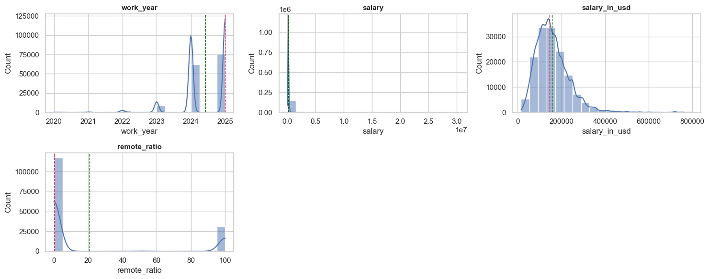
Distribución de variables categóricas#
sns.set_style("whitegrid")
palette_cat = sns.color_palette("Set2")
# Función auxiliar: Top N
def plot_top_categories(df, col, top_n=15, ax=None):
"""
Grafica un countplot con las Top N categorías más frecuentes.
"""
top_values = df[col].value_counts().nlargest(top_n).index
data = df[df[col].isin(top_values)]
ax = sns.countplot(
data=data,
x=col,
order=data[col].value_counts().index,
palette=palette_cat,
edgecolor='gray',
ax=ax
)
ax.set_title(f'{col} (Top {top_n})', fontsize=12, fontweight='bold', color='darkblue')
ax.set_xlabel("")
ax.set_ylabel("Frecuencia", fontsize=10)
ax.tick_params(axis='x', rotation=30, labelsize=9)
# Etiquetas en las barras
for bar in ax.patches:
height = bar.get_height()
if height > 0:
ax.annotate(f'{height}',
(bar.get_x() + bar.get_width()/2, height),
ha='center', va='bottom', fontsize=8,
color='black', xytext=(0, 3),
textcoords='offset points')
return ax
# Gráficas categóricas
categorical_cols = df.select_dtypes(include='object').columns
# Ajustes para columnas específicas
special_top = {
"job_title": 20,
"employee_residence": 15,
"company_location": 15
}
# Excluir salary_currency (lo graficamos como pastel)
categorical_cols = [c for c in categorical_cols if c != "salary_currency"]
n = len(categorical_cols)
cols = 2
rows = (n // cols) + (n % cols > 0)
fig, axes = plt.subplots(rows, cols, figsize=(14, rows * 4))
axes = axes.flatten()
for i, col in enumerate(categorical_cols):
top_n = special_top.get(col, 15) # por defecto Top 15
plot_top_categories(df, col, top_n=top_n, ax=axes[i])
# Eliminar ejes sobrantes
for j in range(i+1, len(axes)):
fig.delaxes(axes[j])
plt.tight_layout()
plt.show()
# Gráfico de Salary Currency
currency_counts = df["salary_currency"].value_counts()
plt.figure(figsize=(6,6))
plt.pie(currency_counts.values, labels=currency_counts.index,
autopct='%1.1f%%', colors=sns.color_palette("Set3"), startangle=90)
plt.title("Distribución de Salary Currency", fontsize=13, fontweight="bold", color="darkblue")
plt.show()
C:\Users\eveli\AppData\Local\Temp\ipykernel_15232\3352384916.py:14: FutureWarning:
Passing `palette` without assigning `hue` is deprecated and will be removed in v0.14.0. Assign the `x` variable to `hue` and set `legend=False` for the same effect.
ax = sns.countplot(
C:\Users\eveli\AppData\Local\Temp\ipykernel_15232\3352384916.py:14: UserWarning: The palette list has more values (8) than needed (4), which may not be intended.
ax = sns.countplot(
C:\Users\eveli\AppData\Local\Temp\ipykernel_15232\3352384916.py:14: FutureWarning:
Passing `palette` without assigning `hue` is deprecated and will be removed in v0.14.0. Assign the `x` variable to `hue` and set `legend=False` for the same effect.
ax = sns.countplot(
C:\Users\eveli\AppData\Local\Temp\ipykernel_15232\3352384916.py:14: UserWarning: The palette list has more values (8) than needed (4), which may not be intended.
ax = sns.countplot(
C:\Users\eveli\AppData\Local\Temp\ipykernel_15232\3352384916.py:14: FutureWarning:
Passing `palette` without assigning `hue` is deprecated and will be removed in v0.14.0. Assign the `x` variable to `hue` and set `legend=False` for the same effect.
ax = sns.countplot(
C:\Users\eveli\AppData\Local\Temp\ipykernel_15232\3352384916.py:14: UserWarning:
The palette list has fewer values (8) than needed (20) and will cycle, which may produce an uninterpretable plot.
ax = sns.countplot(
C:\Users\eveli\AppData\Local\Temp\ipykernel_15232\3352384916.py:14: FutureWarning:
Passing `palette` without assigning `hue` is deprecated and will be removed in v0.14.0. Assign the `x` variable to `hue` and set `legend=False` for the same effect.
ax = sns.countplot(
C:\Users\eveli\AppData\Local\Temp\ipykernel_15232\3352384916.py:14: UserWarning:
The palette list has fewer values (8) than needed (15) and will cycle, which may produce an uninterpretable plot.
ax = sns.countplot(
C:\Users\eveli\AppData\Local\Temp\ipykernel_15232\3352384916.py:14: FutureWarning:
Passing `palette` without assigning `hue` is deprecated and will be removed in v0.14.0. Assign the `x` variable to `hue` and set `legend=False` for the same effect.
ax = sns.countplot(
C:\Users\eveli\AppData\Local\Temp\ipykernel_15232\3352384916.py:14: UserWarning:
The palette list has fewer values (8) than needed (15) and will cycle, which may produce an uninterpretable plot.
ax = sns.countplot(
C:\Users\eveli\AppData\Local\Temp\ipykernel_15232\3352384916.py:14: FutureWarning:
Passing `palette` without assigning `hue` is deprecated and will be removed in v0.14.0. Assign the `x` variable to `hue` and set `legend=False` for the same effect.
ax = sns.countplot(
C:\Users\eveli\AppData\Local\Temp\ipykernel_15232\3352384916.py:14: UserWarning: The palette list has more values (8) than needed (3), which may not be intended.
ax = sns.countplot(
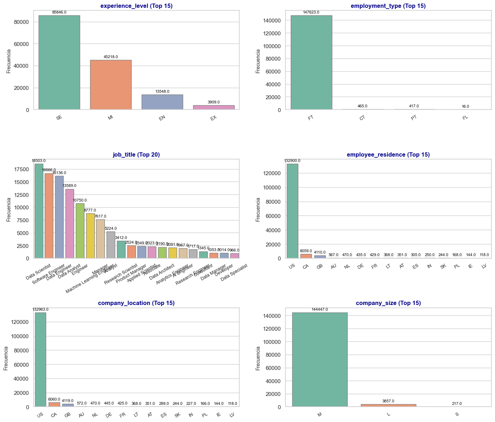
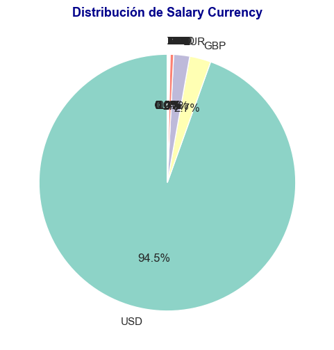
Tasa anual de contratación de profesionales en ciencia de datos#
df['work_year'].value_counts()
work_year
2025 75802
2024 62241
2023 8524
2022 1661
2021 218
2020 75
Name: count, dtype: int64
df['work_year'].value_counts().sort_index().plot.bar(
figsize=(5,3), color="skyblue", edgecolor="black"
)
plt.xlabel("Años")
plt.ylabel("Contratados")
plt.title("Contrataciones anuales en Ciencia de Datos")
plt.show()
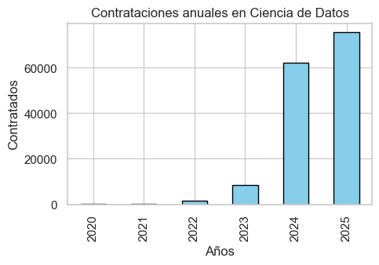
La mayoría de los registros corresponden a los años más recientes (2024 y 2025), indicando que los datos son predominantemente actuales.
Impacto del nivel de experiencia en las oportunidades de empleo cada año#
df.groupby('work_year')['experience_level'].value_counts()
work_year experience_level
2020 MI 31
EN 21
SE 19
EX 4
2021 MI 87
SE 75
EN 46
EX 10
2022 SE 1142
MI 359
EN 117
EX 43
2023 SE 6097
MI 1717
EN 466
EX 244
2024 SE 35331
MI 19534
EN 6185
EX 1191
2025 SE 43182
MI 23490
EN 6713
EX 2417
Name: count, dtype: int64
df_counts = df.groupby('work_year')['experience_level'].value_counts().unstack(fill_value=0)
df_props = df_counts.div(df_counts.sum(axis=1), axis=0)
df_props.plot(kind='bar', stacked=True, figsize=(6,4))
plt.xlabel('Years')
plt.ylabel('Work Experience')
plt.title('Work Experience by Years')
plt.show()
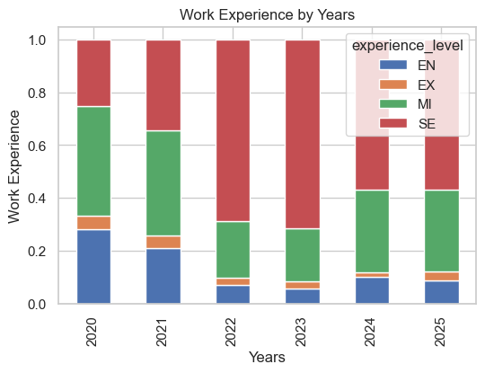
Se puede evidenciar que el mercado de Ciencia de Datos favorece perfiles Senior y Mid-level, pero sigue abriendo espacio para entry-level, aunque en menor medida.
Cambio de salarios a lo largo del tiempo#
df.groupby('work_year')['salary_in_usd'].mean()
work_year
2020 102250.866667
2021 99922.073394
2022 134146.471403
2023 153682.160371
2024 159589.557767
2025 156981.857471
Name: salary_in_usd, dtype: float64
df.groupby('work_year')['salary_in_usd'].mean().plot.line(figsize=(5,3), marker='o')
plt.xlabel('Years')
plt.ylabel('Salaries in USD')
plt.title('Salaries by Years')
plt.tight_layout()
plt.show()
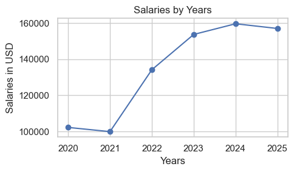
Después de una ligera caída en 2021, los salarios han mostrado una tendencia creciente hasta 2024, con una leve disminución en 2025.
Distribución salarial según el nivel de experiencia#
df.groupby('experience_level')['salary_in_usd'].mean()
experience_level
EN 98902.747121
EX 202364.660271
MI 142443.913397
SE 172667.352294
Name: salary_in_usd, dtype: float64
df.boxplot(column='salary_in_usd', by='experience_level', figsize=(5,3))
plt.title('Salary Distribution by Experience Level')
plt.suptitle('')
plt.xlabel('Experience Level')
plt.ylabel('Salaries in USD')
plt.show()
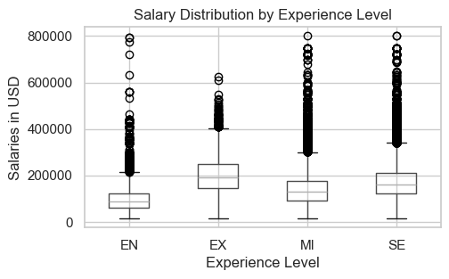
Los resultados muestran que el nivel de experiencia tiene un impacto claro en los salarios promedio.
Salarios según el tipo de empleo#
df.groupby('employment_type')['salary_in_usd'].mean()
employment_type
CT 104928.161290
FL 50651.562500
FT 157925.442018
PT 76207.983213
Name: salary_in_usd, dtype: float64
df.groupby('employment_type')['salary_in_usd'].mean().plot.barh(figsize=(4,3))
plt.xlabel('Salary in USD')
plt.ylabel('Employment Type')
plt.title('Salaries by Employment Type')
plt.show()
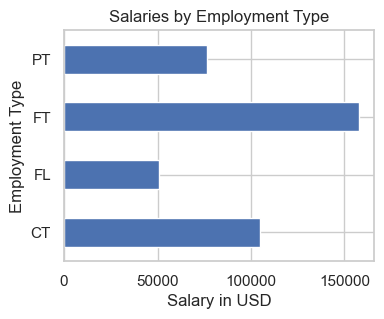
se puede observar que los profesionales a tiempo completo son quienes reciben los salarios más altos en promedio, mientras que los freelancers y los de medio tiempo ganan bastante menos.
Títulos de trabajo con los salarios promedios más altos#
df.groupby('job_title')['salary_in_usd'].median().sort_values(ascending = False).head(7)
job_title
Research Team Lead 450000.0
Analytics Engineering Manager 399880.0
Data Science Tech Lead 375000.0
Applied AI ML Lead 292500.0
IT Enterprise Data Architect 284090.0
Head of Applied AI 281500.0
AIRS Solutions Specialist 263250.0
Name: salary_in_usd, dtype: float64
df.groupby('job_title')['salary_in_usd'].median().sort_values(ascending=False).head(7).plot.bar(figsize=(6,4))
plt.xlabel('Job Title')
plt.ylabel('Salary in USD')
plt.title('Median Salary by Job Title')
plt.show()
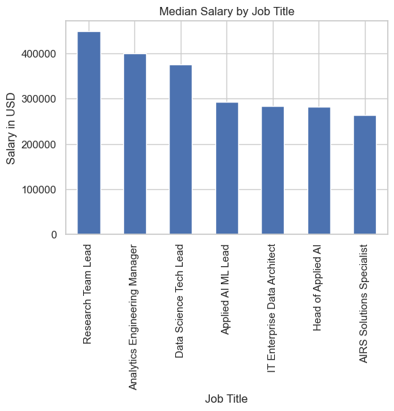
Nos confirma que los puestos de liderazgo y gestión en ciencia de datos, analítica e inteligencia artificial son los que concentran los salarios más altos.
Los títulos de trabajo más comunes#
df['job_title'].value_counts().head(7)
job_title
Data Scientist 18503
Software Engineer 16666
Data Engineer 16136
Data Analyst 13589
Engineer 10750
Machine Learning Engineer 8777
Manager 7617
Name: count, dtype: int64
plt.figure(figsize=(6,4))
df['job_title'].value_counts().head(7).sort_values().plot.barh()
plt.ylabel('Job Title', fontsize=10)
plt.xlabel('Number of Job Title', fontsize=10)
plt.title('Number of Common Job Title', fontsize=12)
plt.tight_layout()
plt.show()
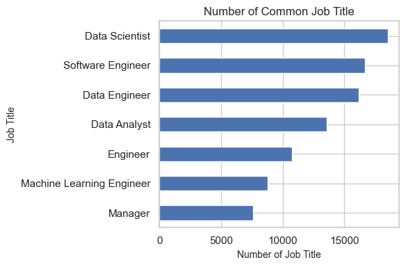
Los roles más comunes están relacionados con ciencia de datos, ingeniería de software y análisis de datos, siendo Data Scientist el más frecuente
Impacto del trabajo remoto en el salario#
df.groupby('remote_ratio')['salary_in_usd'].mean()
remote_ratio
0 159331.619628
50 81556.387195
100 151429.741945
Name: salary_in_usd, dtype: float64
remote_salary = df.groupby('remote_ratio')['salary_in_usd'].mean()
remote_salary = remote_salary.rename({
0: 'On-site',
50: 'Hybrid',
100: 'Fully Remote'
})
print(remote_salary)
remote_ratio
On-site 159331.619628
Hybrid 81556.387195
Fully Remote 151429.741945
Name: salary_in_usd, dtype: float64
plt.figure(figsize=(5,3))
remote_salary.plot.bar()
plt.xlabel('Remote Ratio', fontsize=9)
plt.ylabel('Salary in USD', fontsize=9)
plt.title('Salaries by Remote Ratio', fontsize=10)
plt.tight_layout()
plt.show()
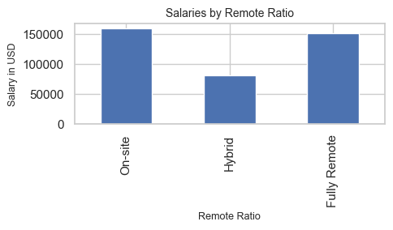
los trabajos totalmente presenciales (On-site) y completamente remotos (Fully Remote) tienen salarios promedio más altos, mientras que los puestos híbridos (Hybrid) presentan un salario promedio significativamente menor.
Influencia del tamaño de la empresa en el salario#
df.groupby('company_size')['salary_in_usd'].mean()
company_size
L 159269.698470
M 157576.445326
S 87835.258065
Name: salary_in_usd, dtype: float64
plt.figure(figsize=(5,3))
df.groupby('company_size')['salary_in_usd'].mean().plot.bar()
plt.xlabel('Company Size', fontsize=9)
plt.ylabel('Salary in USD', fontsize=9)
plt.title('Salaries by Company Size', fontsize=10)
plt.tight_layout()
plt.show()
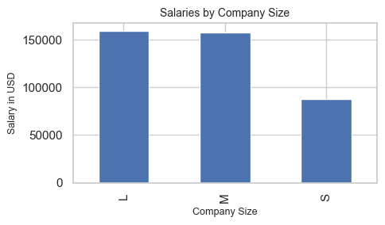
Se observa que las empresas grandes (L) y medianas (M) ofrecen salarios promedio significativamente más altos que las pequeñas (S).
Relación entre el tamaño de la empresa y la contratación de empleados remotos#
df.groupby('company_size')['remote_ratio'].value_counts()
company_size remote_ratio
L 0 3254
100 389
50 214
M 0 114035
100 30342
50 70
S 100 119
0 54
50 44
Name: count, dtype: int64
plt.figure(figsize=(6,3))
counts = df.groupby('company_size')['remote_ratio'].value_counts().unstack(fill_value=0)
sns.heatmap(counts, annot=True, fmt="d", cmap="YlGnBu")
plt.title('Company Size vs Remote Ratio (Count of Employees)', fontsize=10)
plt.ylabel('Company Size', fontsize=9)
plt.xlabel('Remote Ratio', fontsize=9)
plt.tight_layout()
plt.show()
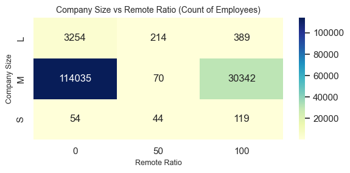
Las empresas más grandes tienden a tener más empleados presenciales, mientras que las pequeñas muestran una proporción relativamente mayor de trabajadores totalmente remotos.
Matriz de correlación#
plt.figure(figsize=(10, 6))
sns.heatmap(df.corr(numeric_only=True), annot=True, cmap='coolwarm', fmt=".2f")
plt.title('Matriz de Correlación')
plt.show()
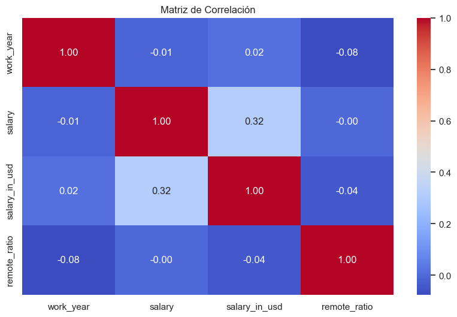
La matriz de correlación muestra que salary y salary_in_usd están moderadamente relacionadas, mientras que remote_ratio y work_year presentan correlaciones bajas con las demás variables, lo que sugiere que no hay evidencia clara de que la modalidad de trabajo remoto o el año del registro influyan en el salario.